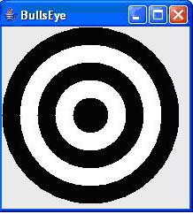

Write a program that draws a picture of a house. Implement a Class House and Supply a method draw (Graphics2D g2) that draws the house.

Programming Assignment
3
DUE at the starting of the class on 10/24/2007 (Monday)
Do the following questions from the text book:
1) Exercise P3.13
Draw a “Bull’s Eye”- a set of concentric rings in alternating
black and white colors. Hint: Fill a black circle, then fill a smaller white
circle on top and so on.

Your program should be composed of classes BullsEye, BullsEyeComponent, and BullsEyeViewer.
2) Exercise P3.14
Write a program that draws a picture of a house. Implement a Class House and
Supply a method draw (Graphics2D g2) that draws the house.
A HouseViewer.java and HouseComponent.java has been provided to you. Format the code according to the class style.
Hand in to the instructor:
Hardcopy of the assignment, application and its output
Bring softcopy of java files, class files, HTML file in a folder (titled by
your name).